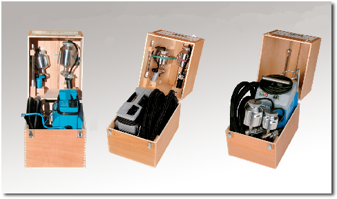

Alles im Kasten. Die Profisets für höchste Ansprüche.
Sie erhalten unsere Profi-Spritzgeräte entweder in robuster Transportverpackung mit dem Hochleistungsgebläse Ihrer Wahl, mit Lackier- und Farbspritzpistole PN 1 A oder PN 2 A, mit 6 m Luftschlauch, Tauchmessbecher, Trageriemen (nur bei SG 90) und Ersatzansaugfilter, oder als Systemset im robusten, baustellengerechten Holztransportkoffer, Systener aus Kunststoff zusätzlich ausgestattet mit der Spezialspritzpistole PN 5 und weiterem, sinnvollem Systemzubehör, wie Gelenk- und Winkelstücke für Überkopfarbeiten, Heizkörper-Vorsatzrohr 300 mm lang, Spritzpistolenständer, Rückentragegestell für das Gerät SG 90.
